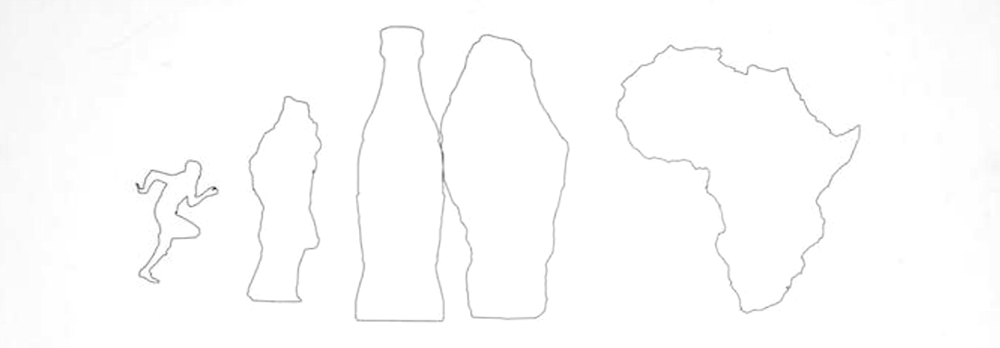

Running Cola is Africa
Almost all of it is gone now…
I want to leave this mall. The space I occupy has been drawn down to a single point.
The interior of the McCafé is confusingly bi-level and decorated like an ad for "Alpine Christmas".
I can sit with this feeling, but it never . . . it never . . .
These streets are littered with pamphlets on palimpsest.
Palimpsest ad nauseam.
There's a chance I lose my mind in this world.
My desires, my history under constant reevaluation.
Codicil is not a word I take lightly.
The Pontiac forms and reforms - a RAM-rendered blip jet.
Subtle mutations upon each manifestation.
Running Cola is Africa.

One thing becomes another and then another.
It's the way natural selection works.
But somehow, the opposite.
The transmogrification of metal into dust.
If the problem could be clearly articulated,
the solution could perhaps be gotten at.
But the problem appears to be endemic.
Baked in.
It's not a glitch in the system.
More something to do with being alive.
With seeing the skies part, and the light come down.
A laser not on a single plane but everywhere at once.
Breaking the upswirling bird tornado into bitz.
Incinerating them, really.
Like us, they fly up into space when they need an "out".
Like there's somewhere else.
Somewhere other than where they find themselves to be.